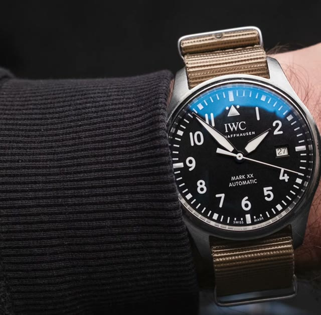
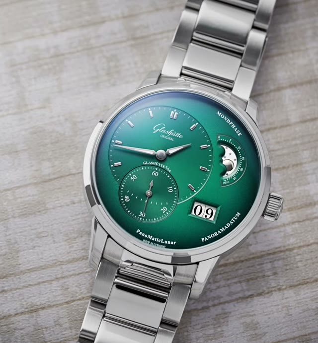
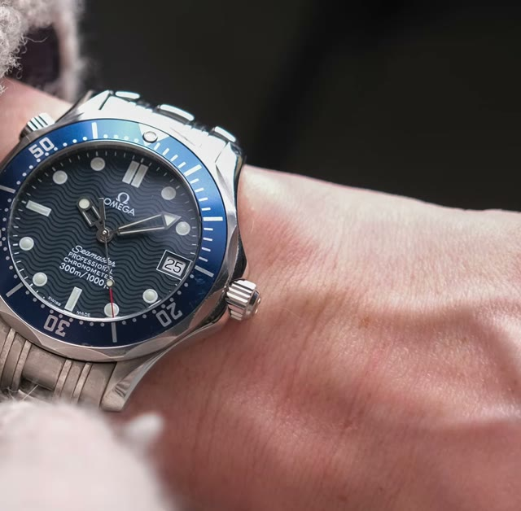
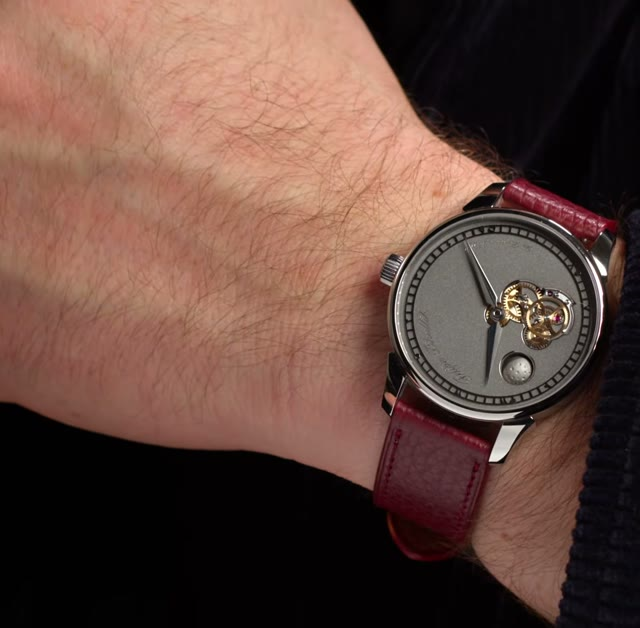
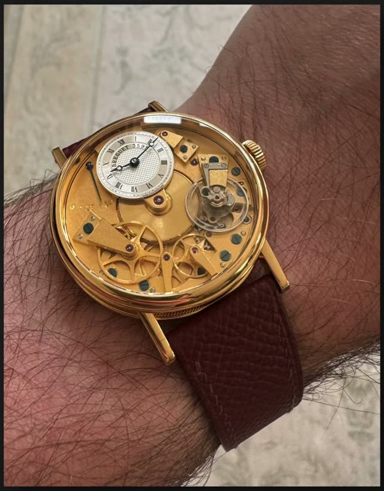
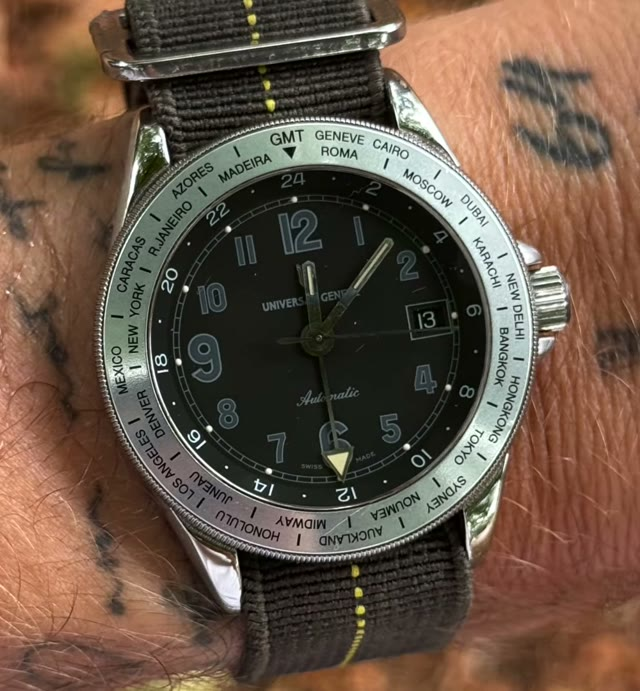

The host had each enthusiast show the watch they wore to the shoot. Together with what each said while picking, this gives a first read on each person as a wearer: the layer of the collection taxonomy that the blind judges could not see.
Quotes are from YouTube's auto-generated captions, lightly cleaned of filler words and caption errors (for example “Doc” for Doxa). Timestamps link to the moment in the video.
Adrien Barker
founder of a strap company, Bark & Jack · judges' 2nd

On his wrist at 18:50
IWC Pilot's Watch Mark XX, black dial
IW328201
Specs
40 mm steel, IWC calibre 32111 automatic, 10 bar. Sold on a black calfskin strap; he wears it on a single-piece nylon strap.
Model legible on dial; reference matched to black dial
About the watch he wore
“I guess this plays into my boring taste of watches. I like watches that have been designed to do a purpose, and that they live up to that purpose. Black dial, matte black dial as a tool watch. Nice field watch, pilot watch.” 18:47
Teddy's reply: “You're not boring. You're just classic and timeless.”
His stated criteria
Watch one: “the daily … the watch that you just grab for any occasion … You can wear it with jeans and t-shirt or you can wear it with a suit.” 4:45
Would choose Grand Seiko instead “if I wanted something that would give me more of a dressy feeling … the finishing is a bit higher.”
Watch two: “something a bit more fun, a bit more colorful, like a weekend watch … a bit more busyness on the dial … a colorful chronograph.” He rejected one candidate as too similar to the Aqua Terra and one as too big. 19:49
On the IWC chronograph: “a chunky beast, but … that's what I'd want in contrast to the Aqua Terra.”
Read as a wearer: a tool-watch purist who values purpose-built design, black dials and straps. He built the textbook daily-plus-weekend pair and stayed within his own taste.
Teddy Baldassarre
host · judges' 3rd

Product image the video shows at 21:46; the watch is not shown on his wrist
Glashütte Original PanoMaticLunar, green dial
1-90-02-13-32-70 (steel bracelet)
Specs
40 mm steel, calibre 90-02 automatic, Panorama Date, moon phase, green-black lacquered dial, 5 bar.
Model named and shown; reference matched to green dial on bracelet
The caption reads “Panamatic lunar green dial.” He may wear it on a strap; the bracelet reference matches the image the video shows.
About the watch he wore
“I'm wearing a PanoMatic Lunar green dial … That's a little more bold, right? … I like blue as well.” 21:41
His stated criteria
“For an everyday piece, cuz I only have two watches, I need something that can cover a lot of bases.” Chose 37 mm: “I can wear this formally while also, you know, rough and tumble.” 7:31
Accuracy: “plus or minus 20 seconds a year is not too bad either.”
Watch two: “I've been inspired to get maybe a little bit more interesting … This will be my complication.” At 42 mm it is “pushing the limit,” but “I think if I wanted to go more elegant … I could dress that.” 21:57
Sizing: “I subscribe to the Tim Mosso sizing guide,” meaning a wide range of sizes can work.
Read as a wearer: prefers compact cases (37 mm), likes colour (blue, green, copper) and German and Japanese finishing. He wore a dressy moon-phase calendar and picked another, so his second watch follows his own taste.
Brit Pierce
watch reviewer · judges' 1st

On her wrist at 24:52
Omega Seamaster Diver 300M midsize, blue wave dial
most likely 2551.80.00
Specs
About 36 mm steel, Omega calibre 1120 automatic chronometer, 300 m, blue wave dial and bezel; discontinued.
She calls it “the smaller size, the midsize that has been discontinued.” The dial reads Automatic Chronometer, which fits the midsize automatic 2551.80; the quartz midsize is a different reference.
About the watch she wore
“The Omega Seamaster Diver 300, the smaller size, the midsize that has been discontinued, and we've been asking Omega to bring this back.” 24:47
Of the SeaQ: “If I had it in my collection, I would sell a lot of things because it would make them moot. I would sell my Black Bay 58, my Black Bay 54, possibly even the Omega Seamaster 300 I'm wearing right now.”
Her stated criteria
“If we are doing a daily watch, which is where I'm going to start mine.” 9:00 On the U.F.A.: “exceptionally practical to have plus or minus 20 seconds per year … looks good on wrist, easy to wear, easy to choose.”
“If I'm getting a Grand Seiko, I want Spring Drive. It's a distinction of theirs that matters to me.” 37 mm is her preference.
Watch two: “either sporty or dressy complicated, but for my personal life I lean more sporty. I find myself choosing my sporty watches more often.” 25:30
“If you care about finishing, this is offering a lot for its price … a different, if-you-know-you-know kind of choice.” And: “a Japanese watch and a German watch. So, no Swiss. Going a little bit niche.” She dislikes faux-aged (“fauxtina”) dials.
Read as a wearer: a diver person (Black Bay 58, Black Bay 54, Seamaster 300 already in her collection) who prefers smaller cases, blue dials, accuracy and finishing. She built her pair from what she actually reaches for, which is also what the judges rewarded.
Marco
Swiss Watch Gang · judges' 4th

On his wrist at 26:38
Felipe Pikullik Mondphase 1 (“Moonphase One”)
Mondphase 1, frosted black-rhodium dial
Specs
41 mm steel, hand-wound modified Unitas 6497, hand-made spherical moon phase, hand-engraved name on the dial; limited to 20 pieces; €24,000 at launch.
The captions render the maker as “Filipe Piculik.” The dial matches the regular edition, not the later Meteorite edition.
About the watch he wore
“A watch made in Berlin, Germany by young independent watchmaker Felipe. He does the moon phase and all the gears on the front himself … hand-skeletonized and hand-finished … the balance cock hand-engraved.” The strap is “made in New Jersey.” 26:35
“I love German watchmaking … But I'm not a big bracelet guy. So I think 50% of the store is not an option for me.”
His stated criteria
“Something mechanical.” For daily wear, automatic: “Sometimes I do forget to wind my watches, although, you know, it's very romantic to do so.” 10:51
“If it's just two watches, I would go for one which is highly mechanical … you could stare at this thing the whole day … a person who collects independent watches, I think they would kind of love this as well.”
Of Glashütte Original: “quality is something I love, but also the price point they work at is extremely good.”
Of Grand Seiko: “you would just have to tell me which one has the nicest movement”; he skipped Spring Drive for the 9SA5, and would swap the bracelet for a strap. 27:14
Read as a wearer: a movement-first collector of German and independent watchmaking who prefers straps to bracelets. He chose both watches for their mechanics, and the pair reflects that, not the everyday brief.
Andrew Morgan
“Mr Creamy” · judges' 6th

Photo of it on his wrist, shown in the video at 29:22
Breguet Classique Tradition 7027, yellow gold
most likely 7027BA/11/9V6
Specs
37 mm 18k yellow gold, hand-wound Breguet calibre 507 DR, open-worked movement on the dial side, offset guilloché time dial, 3 bar.
He also wore, on the other wrist, a Gallet he had just been given. It may be the same MultiChron model he picked, but I could not confirm that from the video.
About the watch he wore
“My Breguet Tradition, which … I have a history of not buying watches that I should have done. And this was the one where I finally grew up … well, my credit card did … one of the greatest watchmakers who ever lived, one of the greatest designs … whatever kind of finishing you can think of, it's in there, and on the secondary market at a really great price.” 29:05
His stated criteria
“I have a terrible memory, so I never know what date it is. And a way to compensate for that is to go for a full-blown perpetual calendar.” 13:08
“I've had Tudor watches as something I've worn daily … So I feel like that's an obvious choice. Maybe I want to do something a little bit different.”
“I want to wear something I feel comfortable to wear in London … I really love war-era chronographs … designed for a purpose, but the sizing, the balance, that kind of creamy lume.” He enjoys hand-winding: “it's also fun.” 14:12
“They couldn't be more different … usually you would think a dress watch would be smaller and the sports watch bigger and chunkier, but this way round feels more me.” 36:26
Read as a wearer: a vintage-leaning, finishing-obsessed collector who wears gold and hand-wound watches daily and enjoys going against the expected pairing. He also played to the camera (“performative watch collecting,” another panelist teased). His pair fits him and does not fit a typical wearer, which is the only kind a blind judge can assume.
James McBay
judges' 5th · blind experts' 1st

On his wrist at 31:50
Universal Genève GMT World Time (about 1993)
most likely ref. 873.435
Specs
About 40 mm steel, automatic UG calibre 73, rotating world-cities bezel with 24-hour ring, date; black-dial run of about 1,000.
Model clear; reference inferred from his description
His details match the listing: “the only GMT and World Time that UG ever made,” “there's like a thousand of these,” his birth year, new old stock. The video's dial looks very dark green; the listing calls it matte black. I could not verify his “only one ever made” claim.
About the watch he wore
“Universal Genève … everyone knows the '40s, '60s, even '70s. Most people give up at the end of the '80s into the '90s with UG, but for me, I think there's a few references that are real hidden gems.” 31:37
“It was like $1,000 for me. It ticks every box. It's my birth year watch as well … effectively new old stock. Came on the original bracelet from an auction.”
Later: “I'm kind of exclusively into vintage nowadays.”
His stated criteria
Doxa: “a watch that I can wear every day that's comfortable, that has a sense of history, provenance … a proper tool watch designed for a set purpose … 200 m … they're not going to break the bank.” He chose black over orange because it feels vintage. 16:52
Watch two: “something that's the polar opposite of the Doxa. If you've only got two watches, you need to be able to tick different boxes.” A larger Blancpain Villeret was ruled out by his “twig wrists.”
He picked the Grand Seiko he bought for his wife and wears often: “they can be real tool watches … 10 bar water resistance … beat that up,” and “a perfect dress watch, but I can also dress it down.” 33:43
“If you can only have two, I need diversity between the two … I've picked watches that I can in theory, within reason, do anything in.”
Read as a wearer: a vintage, value-conscious collector with slim wrists who prizes provenance and underrated brands. His stated logic is the expert taxonomy's, nearly word for word: diversity, cover every situation. That explains why the blind experts ranked his pair first. Note one factual point: he describes the GMT as 10 bar, but Grand Seiko's own page rates the SBGM221 only splash resistant.
The six as wearer profiles
Picker
Wore
Taste signals
Stated two-watch logic
Pair true to own taste?
Brit
Omega Seamaster 300M midsize
Divers, smaller cases, blue, accuracy, finishing
A daily first, then the sporty kind she actually reaches for
Yes
Adrien
IWC Mark XX on nylon
Purpose-built tool watches, black dials
Grab-for-anything daily plus a colourful weekend chronograph
Yes
Teddy
GO PanoMaticLunar, green
Compact, colourful, German and Japanese finishing
Cover the bases, then add “my complication”
Yes
Marco
Felipe Pikullik Mondphase 1
Independent and German movements, straps over bracelets
Mechanical interest first, automatic for practicality
Something different: a perpetual for a bad memory, a war-era chronograph for daily
Yes, deliberately
Everyone picked for themselves. All six pairs are faithful to the taste each person showed. The ranking therefore measures how closely each person's own taste matched the judges' assumed typical wearer, not who misread the brief.
The two winners are the two whose taste is most conventional. Brit and Adrien are self-described daily-diver and tool-watch people, so a pair true to them was also everyday-proof, which is what the inferred judging criteria rewarded.
Layer 1 changes the verdict. For Andrew, who wears gold and hand-wound watches daily in London, his pair is defensible. For a typical wearer it is the weakest. The judges, who were blind to who picked what, could only score against the typical wearer.